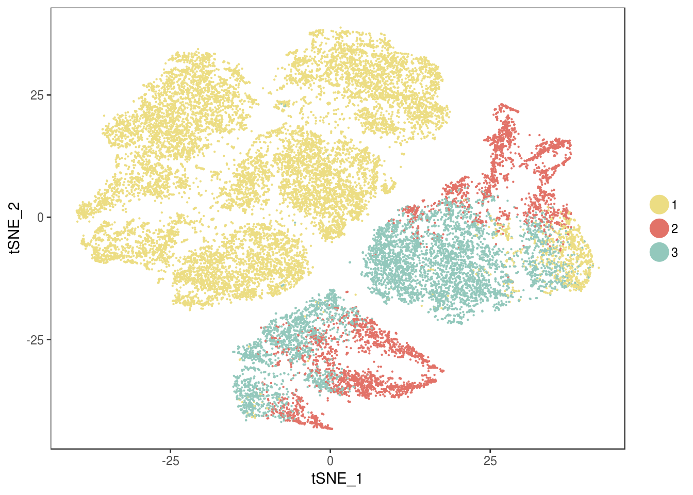
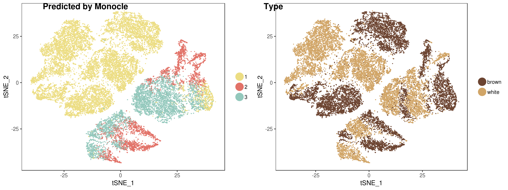
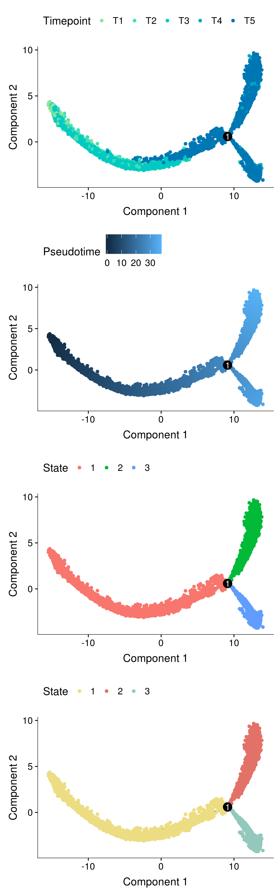
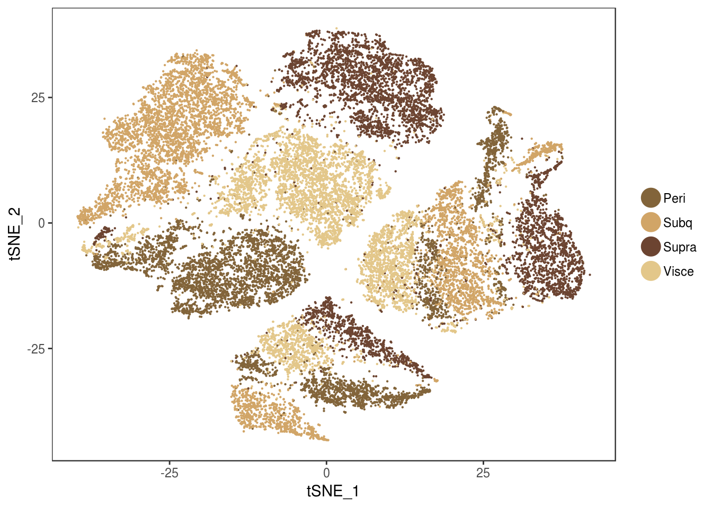
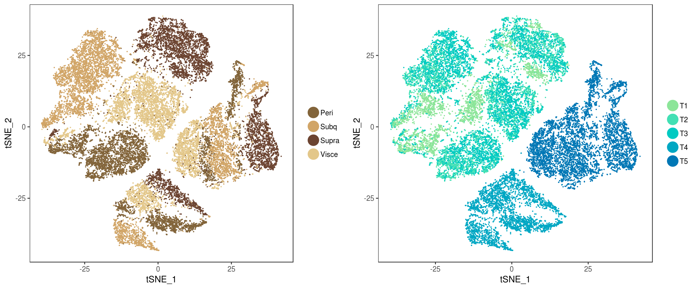
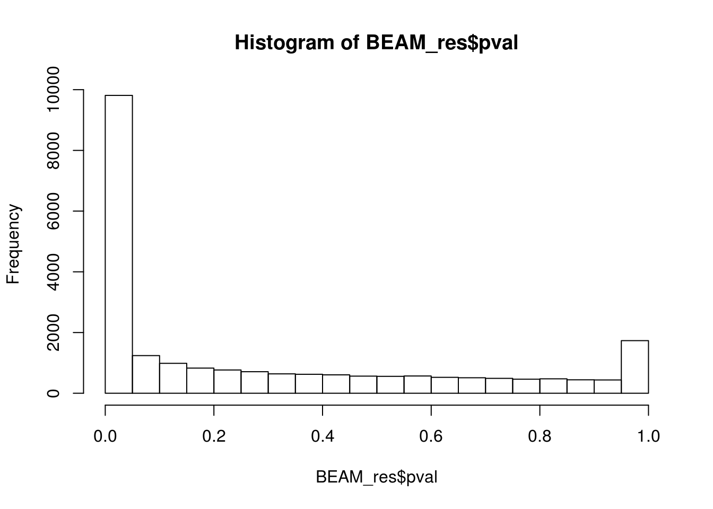
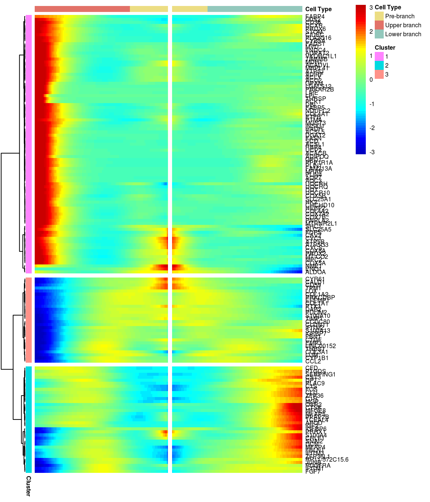
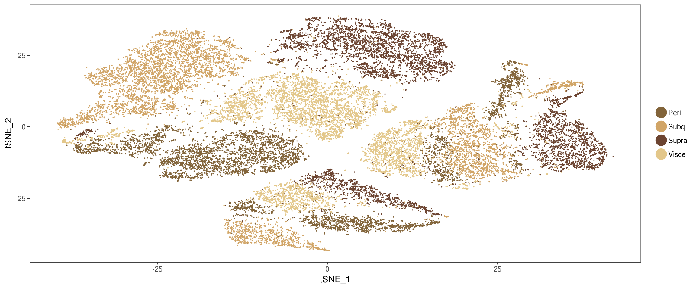
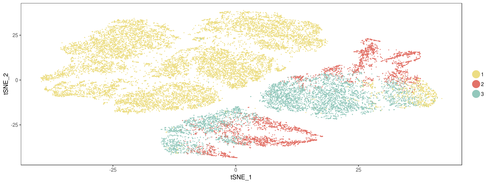

R Notebook
Last updated: 2019-01-03
workflowr checks: (Click a bullet for more information)-
✔ R Markdown file: up-to-date
Great! Since the R Markdown file has been committed to the Git repository, you know the exact version of the code that produced these results.
-
✔ Environment: empty
Great job! The global environment was empty. Objects defined in the global environment can affect the analysis in your R Markdown file in unknown ways. For reproduciblity it’s best to always run the code in an empty environment.
-
✔ Seed:
set.seed(20181026)The command
set.seed(20181026)was run prior to running the code in the R Markdown file. Setting a seed ensures that any results that rely on randomness, e.g. subsampling or permutations, are reproducible. -
✔ Session information: recorded
Great job! Recording the operating system, R version, and package versions is critical for reproducibility.
-
Great! You are using Git for version control. Tracking code development and connecting the code version to the results is critical for reproducibility. The version displayed above was the version of the Git repository at the time these results were generated.✔ Repository version: e8cd231
Note that you need to be careful to ensure that all relevant files for the analysis have been committed to Git prior to generating the results (you can usewflow_publishorwflow_git_commit). workflowr only checks the R Markdown file, but you know if there are other scripts or data files that it depends on. Below is the status of the Git repository when the results were generated:
Note that any generated files, e.g. HTML, png, CSS, etc., are not included in this status report because it is ok for generated content to have uncommitted changes.Ignored files: Ignored: analysis/figure/ Ignored: code/.ipynb_checkpoints/ Ignored: output/10x-180504 Ignored: output/10x-180504-aligned Ignored: output/10x-180504-aligned-metageneplot Ignored: output/10x-180504-beforeQC Ignored: output/10x-180504-beforeqc Ignored: output/10x-180504-cca-discardedcells Ignored: output/10x-180504-ccregout Ignored: output/10x-180504-ccregout-aligned Ignored: output/10x-180504-ccregout-cca-discardedcells Ignored: output/10x-180831 Ignored: output/10x-180831-T1T2T3 Ignored: output/10x-180831-T4T5 Ignored: output/10x-180831-beforeqc Ignored: output/10x-180831-notcleaned Ignored: output/monocle/ Untracked files: Untracked: analysis/velocyto_notebook_180831.ipynb Untracked: output/velocyto/10x-180831.hdf5 Untracked: output/velocyto/10x-180831.loom Untracked: output/velocyto/10x-180831_tsne33_velocity.hdf5 Untracked: output/velocyto/10x-180831_tsne_velocity.hdf5 Untracked: tables/10x-180831-metadata.txt Untracked: tables/BEAM/ Untracked: tables/BEAM_GSEA/ Unstaged changes: Deleted: analysis/.ipynb_checkpoints/velocyto_notebook_180504-Copy1-checkpoint.ipynb Deleted: analysis/.ipynb_checkpoints/velocyto_notebook_180504-checkpoint.ipynb Modified: analysis/10x-180504-general-analysis.Rmd Modified: analysis/10x-180504-mixture-cluster.Rmd Modified: analysis/10x-180831-general-analysis.Rmd Deleted: analysis/velocyto_notebook_180504-Copy1.ipynb Modified: analysis/velocyto_notebook_180504.ipynb Modified: code/velocyto_preprocess.py Modified: code/velocyto_workflow.py Modified: plots/180504_pca_tsne.pdf Modified: plots/180504_velocyto_phase.pdf Modified: plots/180504_velocyto_phase_legend.pdf Modified: plots/supplementary_figures/sfig_180504_pcelbow.pdf Modified: plots/supplementary_figures/sfig_180504_qcplots.pdf
Expand here to see past versions:
| File | Version | Author | Date | Message |
|---|---|---|---|---|
| Rmd | e8cd231 | PytrikFolkertsma | 2019-01-03 | wflow_publish(c(“analysis/10x-180831-monocle.Rmd”)) |
library(Seurat)Loading required package: ggplot2Loading required package: cowplot
Attaching package: 'cowplot'The following object is masked from 'package:ggplot2':
ggsaveLoading required package: Matrixlibrary(monocle)Loading required package: BiobaseLoading required package: BiocGenericsLoading required package: parallel
Attaching package: 'BiocGenerics'The following objects are masked from 'package:parallel':
clusterApply, clusterApplyLB, clusterCall, clusterEvalQ,
clusterExport, clusterMap, parApply, parCapply, parLapply,
parLapplyLB, parRapply, parSapply, parSapplyLBThe following objects are masked from 'package:Matrix':
colMeans, colSums, rowMeans, rowSums, whichThe following objects are masked from 'package:stats':
IQR, mad, sd, var, xtabsThe following objects are masked from 'package:base':
anyDuplicated, append, as.data.frame, cbind, colMeans,
colnames, colSums, do.call, duplicated, eval, evalq, Filter,
Find, get, grep, grepl, intersect, is.unsorted, lapply,
lengths, Map, mapply, match, mget, order, paste, pmax,
pmax.int, pmin, pmin.int, Position, rank, rbind, Reduce,
rowMeans, rownames, rowSums, sapply, setdiff, sort, table,
tapply, union, unique, unsplit, which, which.max, which.minWelcome to Bioconductor
Vignettes contain introductory material; view with
'browseVignettes()'. To cite Bioconductor, see
'citation("Biobase")', and for packages 'citation("pkgname")'.Loading required package: VGAMLoading required package: stats4Loading required package: splinesLoading required package: DDRTreeLoading required package: irlbalibrary(pheatmap)
seurobj <- readRDS('output/10x-180831')Feature selection strategies
Genes with high dispersion
cds_high_disp <- readRDS('output/monocle/180831/monocle_high_dispersion/10x-180831-monocle')
plot_cell_trajectory(cds_high_disp, color_by = 'timepoint')
DE genes between T1T2T3 and T4T5
cds_timecombined <- readRDS('output/monocle/180831/monocle_time-combined/10x-180831-monocle')
plot_cell_trajectory(cds_timecombined, color_by='timepoint')
DE genes from cluster resolution 1.5
cds_res1.5 <- readRDS('output/monocle/180831/monocle_res1.5/10x-180831-monocle')
plot_cell_trajectory(cds_res1.5, color_by='timepoint')
Dataset split into T1+T2+T3 and T4+T5, DE genes from clusters res0.5.
cds_split_res0.5 <- readRDS('output/monocle/180831/monocle_T1T2T3_T4T5_res0.5/10x-180831-noreg-monocle')
plot_cell_trajectory(cds_split_res0.5, color_by='timepoint')
Dataset split into T1+T2+T3 and T4+T5, DE genes from clusters res1.5 are used here. This trajectory was used for further analyses.
cds <- readRDS('output/monocle/180831/monocle_T1T2T3_T4T5_res1.5/10x-180831-monocle')
plot_cell_trajectory(cds, color_by='timepoint')
Trajectory plots
fig <- plot_grid(ncol=1,
plot_cell_trajectory(cds, color_by='timepoint'),
plot_cell_trajectory(cds, color_by='Pseudotime'),
plot_cell_trajectory(cds, color_by='State'),
plot_cell_trajectory(cds, color_by = "State") + scale_color_manual(values=c("#f67770", "#964B00", "orange"), name = "State"))
fig
plot_cell_trajectory(cds, color_by = "timepoint") + geom_point(color='white', size=5) + geom_point(aes(colour=timepoint), alpha=0.1)
plot_cell_trajectory(cds, color_by = "timepoint") + geom_point(color='white', size=5) + geom_point(aes(colour=timepoint), alpha=0.01)
#seurobj <- AddMetaData(seurobj, pData(cds)['State'])
#saveRDS(seurobj, 'output/10x-180831')BEAM
BEAM takes as input a CellDataSet that’s been ordered with orderCells and the name of a branch point in the trajectory. It returns a table of significance scores for each gene. Genes that score significant are said to be branch-dependent in their expression.
#BEAM_res <- BEAM(cds, branch_point = 1, cores = 10)
load('output/monocle/180831/BEAM')
BEAM_res <- BEAM_res[order(BEAM_res$qval),]
BEAM_res <- BEAM_res[,c("gene_short_name", "pval", "qval")]paste('Significant genes with q-val < 0.01:', length(BEAM_res$qval[BEAM_res$qval < 0.01]))[1] "Significant genes with q-val < 0.01: 8360"paste('Significant genes with q-val < 0.001:', length(BEAM_res$qval[BEAM_res$qval < 0.001]))[1] "Significant genes with q-val < 0.001: 7216"paste('Significant genes with q-val < 0.0001:', length(BEAM_res$qval[BEAM_res$qval < 0.0001]))[1] "Significant genes with q-val < 0.0001: 6421"paste('Significant genes with q-val < 0.00001:', length(BEAM_res$qval[BEAM_res$qval < 0.00001]))[1] "Significant genes with q-val < 0.00001: 5860"paste('Significant genes with q-val = 0:', length(BEAM_res$qval[BEAM_res$qval == 0]))[1] "Significant genes with q-val = 0: 329"Histograms of p-values and q-values
hist(BEAM_res$pval)
hist(BEAM_res$qval)
Filtering BEAM results on fold change
matrix <- as.matrix(seurobj@data)
calculateAvgLogFC <- function(gene){
gene <- as.character(gene)
state2 <- log1p(mean(expm1(as.numeric(matrix[gene, row.names(seurobj@meta.data)[seurobj@meta.data$State == 2]])))) # first un-log transform. then average. then logp1 again. This is all done to calculate the mean in non-log-space.
state3 <- log1p(mean(expm1(as.numeric(matrix[gene, row.names(seurobj@meta.data)[seurobj@meta.data$State == 3]]))))
return(state2-state3)
}
BEAM_signficnat_res <- BEAM_res[BEAM_res$qval < 0.05,]
BEAM_signficnat_res$avgLogFC_State2_State3 <- sapply(BEAM_signficnat_res$gene_short_name, calculateAvgLogFC)X axis = minimum log fold change.
all <- c()
values <- list()
for (i in seq(0.0, 3, by=0.1)){
fc <- abs(BEAM_signficnat_res$avgLogFC_State2_State3[abs(BEAM_signficnat_res$avgLogFC_State2_State3) >= i])
all <- c(all, fc)
values[toString(i)] <- length(fc)
}
hist(all, breaks=20, probability = F)
hist(all, breaks=20, probability = T)
lines(density(all), col='blue', lwd=2)
data.frame(fold_change=names(values), num_genes=unlist(values)) fold_change num_genes
0 0 9799
0.1 0.1 1775
0.2 0.2 724
0.3 0.3 372
0.4 0.4 215
0.5 0.5 127
0.6 0.6 72
0.7 0.7 50
0.8 0.8 36
0.9 0.9 28
1 1 20
1.1 1.1 18
1.2 1.2 17
1.3 1.3 10
1.4 1.4 6
1.5 1.5 5
1.6 1.6 5
1.7 1.7 5
1.8 1.8 2
1.9 1.9 1
2 2 1
2.1 2.1 1
2.2 2.2 1
2.3 2.3 0
2.4 2.4 0
2.5 2.5 0
2.6 2.6 0
2.7 2.7 0
2.8 2.8 0
2.9 2.9 0
3 3 0BEAM heatmap
Create heatmap of the significant genes with absolute average logFC > 0.3.
#ran in terminal because of computation time
#branched_5 <- plot_genes_branched_heatmap(cds[row.names(subset(BEAM_signficnat_res, abs(avgLogFC_State2_State3) > 0.3))],
# branch_point = 1,
# num_clusters = 5,
# cores = 10,
# show_rownames = F,
# return_heatmap = T,
# branch_labels = c("Cell fate 1 (State 2)", "Cell fate 2 #(State 3)"),
# branch_colors = c('#f67770', '#1bb840', '#649efc')
# )load('output/monocle/180831/branched')You can visualize changes for all the genes that are significantly branch dependent using a special type of heatmap. This heatmap shows changes in both lineages at the same time. It also requires that you choose a branch point to inspect. Columns are points in pseudotime, rows are genes, and the beginning of pseudotime is in the middle of the heatmap. As you read from the middle of the heatmap to the right, you are following one lineage through pseudotime. As you read left, the other. The genes are clustered hierarchically, so you can visualize modules of genes that have similar lineage-dependent expression patterns.
grid::grid.draw(branched_5$ph_res$gtable)
Nr of genes
print_nGene <- function(branched){
print(paste('Total number of genes:', length(branched$annotation_row$Cluster)))
for (i in 1:length(unique(branched$annotation_row$Cluster))){
cluster <- rownames(branched$annotation_row)[branched$annotation_row$Cluster == i]
print(paste('Nr of genes in cluster ', i, ': ', length(cluster), sep=''))
}
}
print('For logFC 0.3:')[1] "For logFC 0.3:"print_nGene(branched_5)[1] "Total number of genes: 334"
[1] "Nr of genes in cluster 1: 23"
[1] "Nr of genes in cluster 2: 172"
[1] "Nr of genes in cluster 3: 46"
[1] "Nr of genes in cluster 4: 62"
[1] "Nr of genes in cluster 5: 31"Write BEAM results to files
for (i in 1:length(unique(branched_5$annotation_row$Cluster))){
BEAM_cluster <- BEAM_signficnat_res[BEAM_signficnat_res$gene_short_name %in% row.names(branched_5$annotation_row)[branched_5$annotation_row == i],]
BEAM_cluster <- BEAM_cluster[order(-BEAM_cluster$avgLogFC_State2_State3),]
write.table(BEAM_cluster, paste('tables/BEAM/genelist_cluster_', i, '.txt', sep=''), row.names=F, quote=F, sep='\t')
} Genes plotted over pseudotime
C/EBPa more important in white. C/EBPb and C/EBPd more important in brown (described in several reviews). Weird to see it the other way around in our data.
cds_subset <- cds[row.names(subset(fData(cds), gene_short_name %in% c('EBF2', 'PDGFRA', 'PDGFRB', 'PPARG', 'MALAT1', 'NEAT1', 'PRDM16', 'CEBPA', 'CEBPB', 'CEBPD', 'UCP1', 'LEP'))),]
p2 <- plot_genes_branched_pseudotime(cds_subset, branch_point = 1, color_by = "timepoint", ncol = 2)
p2Warning: Transformation introduced infinite values in continuous y-axis
Warning: Transformation introduced infinite values in continuous y-axis
#save_plot("../plots/180831_monocle_genes-in-pseudotime-2.pdf", p2, base_width=10, base_height=18)Pseudotime figures report
cds_subset <- cds[row.names(subset(fData(cds), gene_short_name %in% c("IGF2", 'CD36', 'CIDEC', 'PLIN4', 'UCP1', 'UCP2'))),]
p1 <- plot_genes_branched_pseudotime(cds_subset, branch_point = 1, color_by = "timepoint", ncol = 2)
p1Warning: Transformation introduced infinite values in continuous y-axis
Warning: Transformation introduced infinite values in continuous y-axis
#save_plot("../plots/180831_monocle_genes-in-pseudotime.pdf", p1, base_width=10, base_height=9)Figures for report
fig <- plot_grid(
plot_cell_trajectory(cds, color_by='timepoint'),
plot_cell_trajectory(cds, color_by='Pseudotime'),
labels='auto', nrow=1
)
#save_plot("../plots/180831_monocle_timepoint_pseudotime.pdf", fig, base_width=12, base_height=5)
fig
fig2 <- plot_grid(plot_cell_trajectory(cds, color_by='State'), labels=c('d'))
#save_plot("../plots/180831_monocle_state.pdf", fig2, base_width=6, base_height=5)
fig2
grid::grid.draw(branched_5$ph_res$gtable)
#save_plot('../plots/180831_beam_heatmap.pdf', branched_5$ph_res$gtable, base_width=6, base_height=7)Supplementary figures
sfig <- plot_grid(
plot_cell_trajectory(cds_high_disp, color_by='timepoint'),
plot_cell_trajectory(cds_timecombined, color_by='timepoint'),
plot_cell_trajectory(cds_res1.5, color_by='timepoint'),
plot_cell_trajectory(cds, color_by='timepoint'),
labels='auto', nrow=2
)
#save_plot("../plots/supplementary_figures/sfig_180831_monocle_highdisp_timecombined_res1.5_split-res1.5.pdf", sfig, base_width=12, base_height=10)
sfig
hist(BEAM_res$qval)
#pdf('plots/supplementary_figures/sfig_180831_BEAM_qval_hist.pdf')Session information
sessionInfo()R version 3.4.3 (2017-11-30)
Platform: x86_64-redhat-linux-gnu (64-bit)
Running under: Storage
Matrix products: default
BLAS/LAPACK: /usr/lib64/R/lib/libRblas.so
locale:
[1] LC_CTYPE=en_US.UTF-8 LC_NUMERIC=C
[3] LC_TIME=en_US.UTF-8 LC_COLLATE=en_US.UTF-8
[5] LC_MONETARY=en_US.UTF-8 LC_MESSAGES=en_US.UTF-8
[7] LC_PAPER=en_US.UTF-8 LC_NAME=C
[9] LC_ADDRESS=C LC_TELEPHONE=C
[11] LC_MEASUREMENT=en_US.UTF-8 LC_IDENTIFICATION=C
attached base packages:
[1] splines stats4 parallel stats graphics grDevices utils
[8] datasets methods base
other attached packages:
[1] pheatmap_1.0.10 monocle_2.6.4 DDRTree_0.1.5
[4] irlba_2.3.2 VGAM_1.0-6 Biobase_2.38.0
[7] BiocGenerics_0.24.0 Seurat_2.3.4 Matrix_1.2-14
[10] cowplot_0.9.3 ggplot2_3.0.0
loaded via a namespace (and not attached):
[1] Rtsne_0.13 colorspace_1.3-2 class_7.3-14
[4] modeltools_0.2-22 ggridges_0.5.0 mclust_5.4.1
[7] rprojroot_1.3-2 htmlTable_1.12 base64enc_0.1-3
[10] rstudioapi_0.7 proxy_0.4-22 ggrepel_0.8.0
[13] flexmix_2.3-14 bit64_0.9-7 mvtnorm_1.0-8
[16] codetools_0.2-15 R.methodsS3_1.7.1 docopt_0.6
[19] robustbase_0.93-2 knitr_1.20 Formula_1.2-3
[22] jsonlite_1.5 workflowr_1.1.1 ica_1.0-2
[25] cluster_2.0.7-1 kernlab_0.9-27 png_0.1-7
[28] R.oo_1.22.0 compiler_3.4.3 httr_1.3.1
[31] backports_1.1.2 assertthat_0.2.0 lazyeval_0.2.1
[34] limma_3.34.9 lars_1.2 acepack_1.4.1
[37] htmltools_0.3.6 tools_3.4.3 bindrcpp_0.2.2
[40] igraph_1.2.2 gtable_0.2.0 glue_1.3.0
[43] RANN_2.6 reshape2_1.4.3 dplyr_0.7.6
[46] Rcpp_0.12.18 slam_0.1-43 trimcluster_0.1-2.1
[49] gdata_2.18.0 ape_5.1 nlme_3.1-137
[52] iterators_1.0.10 fpc_2.1-11.1 gbRd_0.4-11
[55] lmtest_0.9-36 stringr_1.3.1 gtools_3.8.1
[58] DEoptimR_1.0-8 MASS_7.3-50 zoo_1.8-3
[61] scales_1.0.0 doSNOW_1.0.16 RColorBrewer_1.1-2
[64] yaml_2.2.0 reticulate_1.10 pbapply_1.3-4
[67] gridExtra_2.3 rpart_4.1-13 segmented_0.5-3.0
[70] fastICA_1.2-1 latticeExtra_0.6-28 stringi_1.2.4
[73] foreach_1.4.4 checkmate_1.8.5 caTools_1.17.1.1
[76] densityClust_0.3 bibtex_0.4.2 matrixStats_0.54.0
[79] Rdpack_0.9-0 SDMTools_1.1-221 rlang_0.2.2
[82] pkgconfig_2.0.2 dtw_1.20-1 prabclus_2.2-6
[85] bitops_1.0-6 qlcMatrix_0.9.7 evaluate_0.11
[88] lattice_0.20-35 ROCR_1.0-7 purrr_0.2.5
[91] bindr_0.1.1 labeling_0.3 htmlwidgets_1.2
[94] bit_1.1-14 tidyselect_0.2.4 plyr_1.8.4
[97] magrittr_1.5 R6_2.2.2 snow_0.4-2
[100] gplots_3.0.1 Hmisc_4.1-1 combinat_0.0-8
[103] pillar_1.3.0 whisker_0.3-2 foreign_0.8-71
[106] withr_2.1.2 fitdistrplus_1.0-9 mixtools_1.1.0
[109] survival_2.42-6 nnet_7.3-12 tsne_0.1-3
[112] tibble_1.4.2 crayon_1.3.4 hdf5r_1.0.0
[115] KernSmooth_2.23-15 rmarkdown_1.10 viridis_0.5.1
[118] grid_3.4.3 data.table_1.11.4 FNN_1.1.2.1
[121] git2r_0.23.0 sparsesvd_0.1-4 HSMMSingleCell_0.112.0
[124] metap_1.0 digest_0.6.16 diptest_0.75-7
[127] tidyr_0.8.1 R.utils_2.7.0 munsell_0.5.0
[130] viridisLite_0.3.0 This reproducible R Markdown analysis was created with workflowr 1.1.1